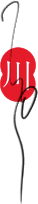
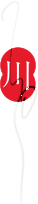

Photograph by Qualishu
About Yoso
I live and work in Miyazaki, in the south of Kyushu. My days begin with meditation, and everything else grows from there: photography, ink on paper, installation and writing.
I think of each as a field to be cultivated. The art is tended the way the heart is: slowly, daily, by returning to it. A photograph of a street at dawn, a brushstroke left to dry, a few lines written after sitting: each is a trace of the same practice, rooted in Buddhist and Shinto ways of seeing.
What I hope to share is simple: attention, compassion and a little more awareness, for the good of all who feel.
Wishing you happiness and prosperity.
Gassho


YosoMiyazaki, Japan
Follow along
Mailing list
Occasional letters when something new is finished. No schedule, no noise.
RSS
Follow each site in your feed reader.
- one.yoso.one/rss.xml
- kuro.yoso.one/feed.xml
- river.yoso.one/feed.xml
- on.yoso.one/feed.xml (everything together)